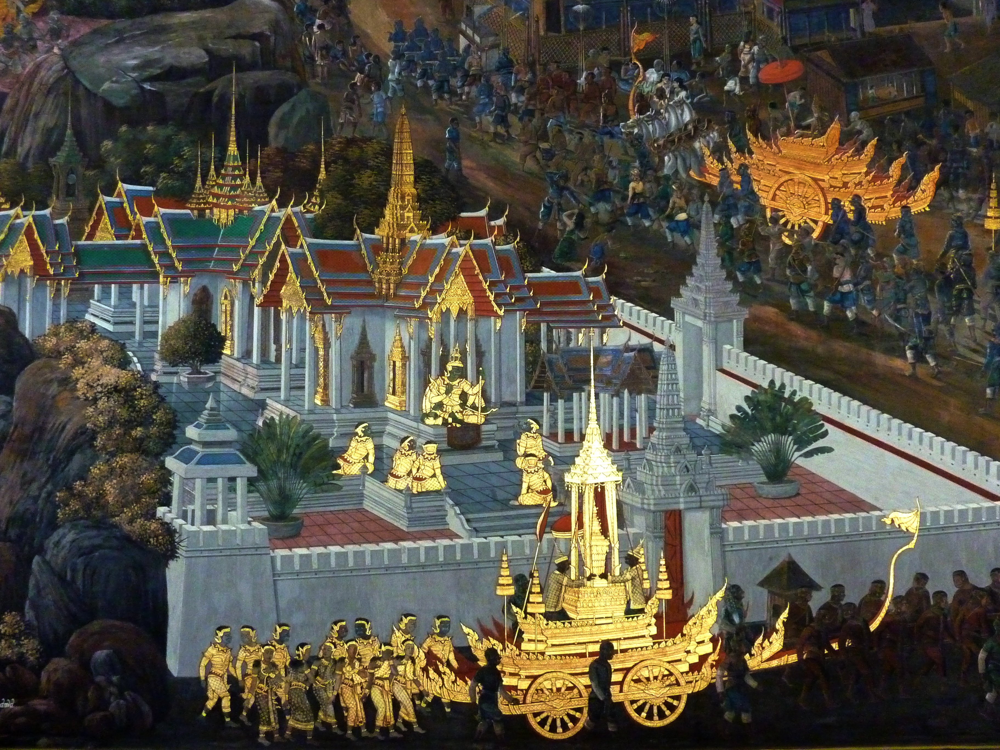

วิชาศิลปะ

อุคิโยเอะ (Ukiyo-e) คือศิลปะภาพพิมพ์แกะไม้ของญี่ปุ่นที่รุ่งเรืองในสมัยเอโดะ มักสื่อถึง "ภาพแห่งโลกอันผันแปร" เช่น ทิวทัศน์ ละครคาบูกิ และวิถีชีวิตชาวเมือง ผลงานที่โด่งดังที่สุดคือ "คลื่นยักษ์นอกฝั่งคานางาวะ" โดยคัตสึชิกะ โฮะกุไซ ซึ่งเป็นภาพหนึ่งในชุด "มุมมองสามสิบหกมุมของภูเขาฟูจิ" ภาพนี้ใช้เส้นโค้งพลิ้วไหว ของคลื่นยักษ์ตัดกับภูเขาฟูจิที่นิ่งสงบอยู่เบื้องหลัง และใช้สีน้ำเงินปรัสเซียนที่เพิ่งนำเข้าจากยุโรปในเวลานั้น ผลงานอุคิโยเอะแบบนี้ยังส่งอิทธิพลอย่างมากต่อศิลปินตะวันตกในยุคอิมเพรสชันนิสม์ จนเกิดกระแสที่เรียกว่า "Japonisme" ในแวดวงศิลปะยุโรป